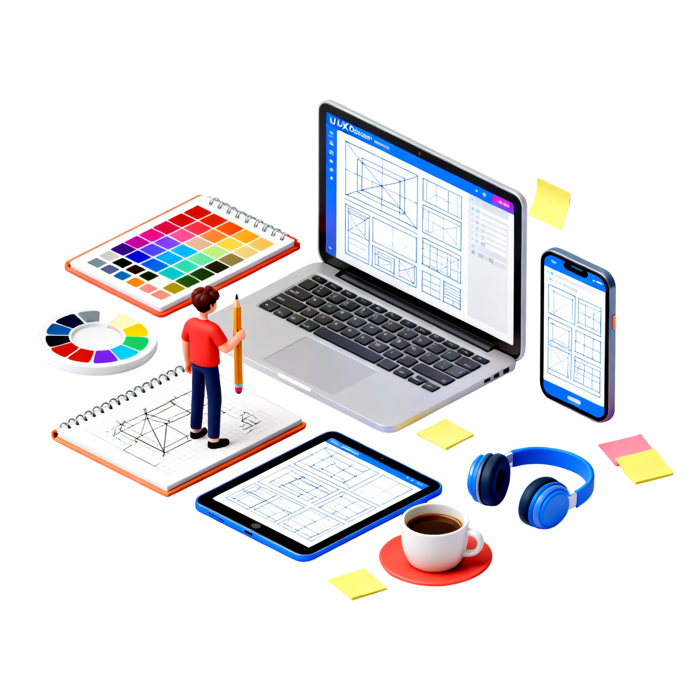
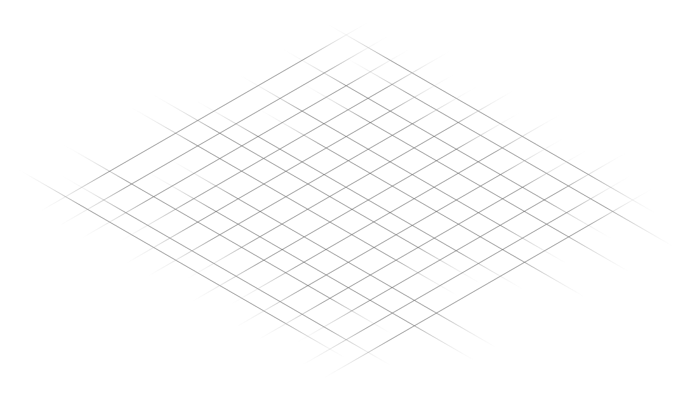
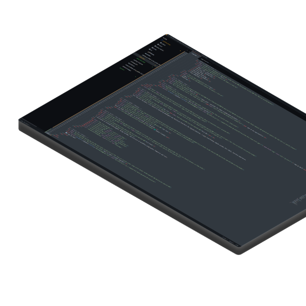
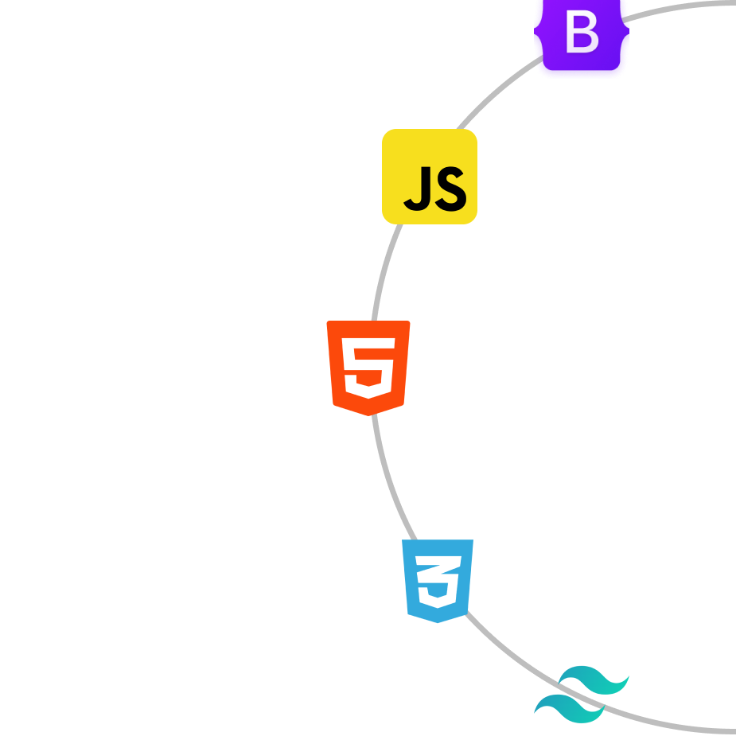
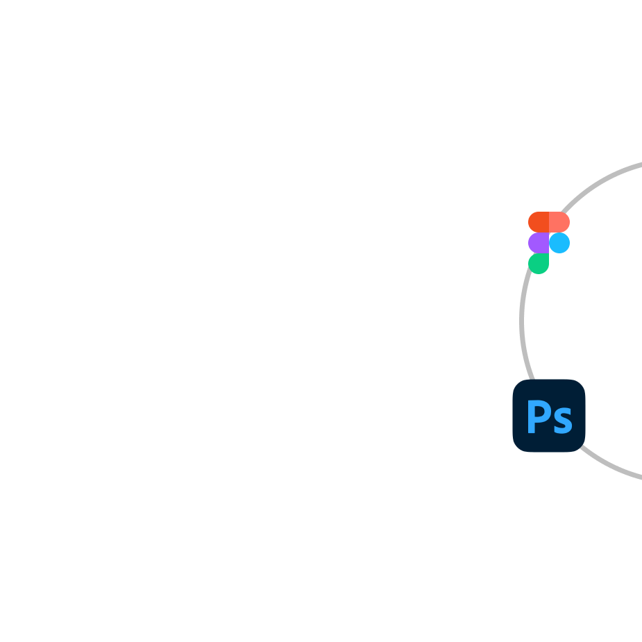
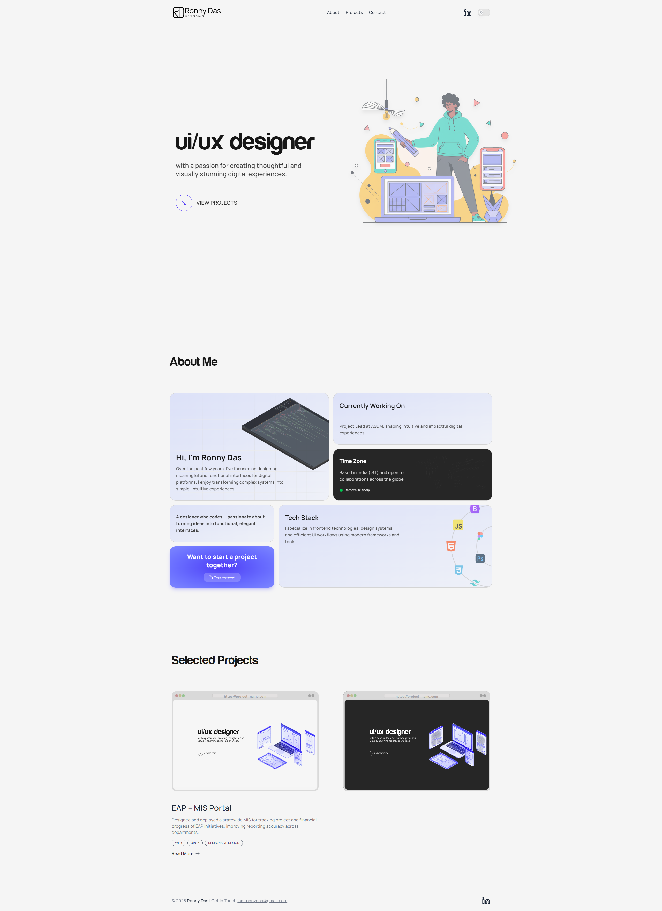

with a passion for creating thoughtful and
visually stunning digital experiences.



Over the past few years, I’ve focused on designing meaningful and functional interfaces for digital platforms. I enjoy transforming complex systems into simple, intuitive experiences.
Project Lead at ASDM, shaping intuitive and impactful digital experiences.
Based in India (IST) and open to collaborations across the globe.
A designer who codes — passionate about turning ideas into functional, elegant interfaces.


I specialize in frontend technologies, design systems, and efficient UI workflows using modern frameworks and tools.
https://project_name.com
Designed and deployed a statewide MIS for tracking project and financial progress of EAP initiatives, improving reporting accuracy across departments.
https://project_name.com
